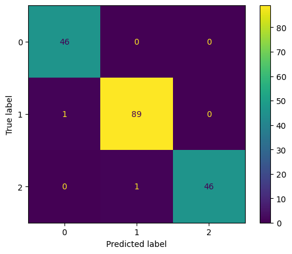

LDA#
from google.colab import drive
drive.mount('/content/drive')
---------------------------------------------------------------------------
KeyboardInterrupt Traceback (most recent call last)
<ipython-input-1-d5df0069828e> in <cell line: 2>()
1 from google.colab import drive
----> 2 drive.mount('/content/drive')
/usr/local/lib/python3.10/dist-packages/google/colab/drive.py in mount(mountpoint, force_remount, timeout_ms, readonly)
101 def mount(mountpoint, force_remount=False, timeout_ms=120000, readonly=False):
102 """Mount your Google Drive at the specified mountpoint path."""
--> 103 return _mount(
104 mountpoint,
105 force_remount=force_remount,
/usr/local/lib/python3.10/dist-packages/google/colab/drive.py in _mount(mountpoint, force_remount, timeout_ms, ephemeral, readonly)
130 )
131 if ephemeral:
--> 132 _message.blocking_request(
133 'request_auth', request={'authType': 'dfs_ephemeral'}, timeout_sec=None
134 )
/usr/local/lib/python3.10/dist-packages/google/colab/_message.py in blocking_request(request_type, request, timeout_sec, parent)
174 request_type, request, parent=parent, expect_reply=True
175 )
--> 176 return read_reply_from_input(request_id, timeout_sec)
/usr/local/lib/python3.10/dist-packages/google/colab/_message.py in read_reply_from_input(message_id, timeout_sec)
94 reply = _read_next_input_message()
95 if reply == _NOT_READY or not isinstance(reply, dict):
---> 96 time.sleep(0.025)
97 continue
98 if (
KeyboardInterrupt:
import pandas as pd
import numpy as np
import pandas as pd
from sklearn.decomposition import LatentDirichletAllocation
from sklearn.cluster import KMeans
from sklearn.feature_extraction.text import CountVectorizer
TTF = pd.read_csv("https://raw.githubusercontent.com/Nicolas271101/ppw/main/cvjpgsd.csv")
TTF
| Judul | ab | abad | abar | abd | abdurrahman | abel | abir | abjad | abk | ... | yusuf | zakat | zaman | zehro | zhitung | zholam | zn | zr | ztabel | zulfa | |
|---|---|---|---|---|---|---|---|---|---|---|---|---|---|---|---|---|---|---|---|---|---|
| 0 | Pengaruh Penggunaan Media Audio Visual Terhada... | 0 | 0 | 0 | 0 | 0 | 0 | 0 | 0 | 0 | ... | 0 | 0 | 0 | 0 | 0 | 0 | 0 | 0 | 0 | 0 |
| 1 | Strategi Sekolah dalam Upaya Penguatan Karakte... | 0 | 0 | 0 | 0 | 0 | 0 | 0 | 0 | 0 | ... | 0 | 0 | 0 | 0 | 0 | 0 | 0 | 0 | 0 | 0 |
| 2 | Perbandingan Hasil Belajar Cooperative Learnin... | 0 | 0 | 0 | 0 | 0 | 0 | 0 | 0 | 0 | ... | 0 | 0 | 0 | 0 | 0 | 0 | 0 | 0 | 0 | 0 |
| 3 | Kemampuan Berpikir Tingkat Tinggi Siswa Kelas ... | 0 | 0 | 0 | 0 | 0 | 0 | 0 | 0 | 0 | ... | 0 | 0 | 0 | 0 | 0 | 0 | 0 | 0 | 0 | 0 |
| 4 | Hubungan Antara Kemandirian Belajar dengan Has... | 0 | 0 | 0 | 0 | 0 | 0 | 0 | 0 | 0 | ... | 0 | 0 | 0 | 0 | 0 | 0 | 0 | 0 | 0 | 0 |
| ... | ... | ... | ... | ... | ... | ... | ... | ... | ... | ... | ... | ... | ... | ... | ... | ... | ... | ... | ... | ... | ... |
| 908 | PENGEMBANGAN MAJALAH BERBASIS GAME MOBILE LEGE... | 0 | 0 | 0 | 0 | 0 | 0 | 0 | 0 | 0 | ... | 0 | 0 | 0 | 0 | 0 | 0 | 0 | 0 | 0 | 0 |
| 909 | PENGEMBANGAN PERANGKAT PEMBELAJARAN MODEL\nPRO... | 0 | 0 | 0 | 0 | 0 | 0 | 0 | 0 | 0 | ... | 0 | 0 | 0 | 0 | 0 | 0 | 0 | 0 | 0 | 0 |
| 910 | Problematika Pembelajaran Daring Siswa Kelas R... | 0 | 0 | 0 | 0 | 0 | 0 | 0 | 0 | 0 | ... | 0 | 0 | 0 | 0 | 0 | 0 | 0 | 0 | 0 | 0 |
| 911 | PENDAMPINGAN ORANG TUA DALAM PROSES BELAJAR AN... | 0 | 0 | 0 | 0 | 0 | 0 | 0 | 0 | 0 | ... | 0 | 0 | 0 | 0 | 0 | 0 | 0 | 0 | 0 | 0 |
| 912 | peran Guru Dalam Menanamkan NIlai-Nilai Kearif... | 0 | 0 | 0 | 0 | 0 | 0 | 0 | 0 | 0 | ... | 0 | 0 | 0 | 0 | 0 | 0 | 0 | 0 | 0 | 0 |
913 rows × 5634 columns
TF = pd.read_csv("https://raw.githubusercontent.com/Nicolas271101/ppw/main/cvpgsd.csv")
TF
| ab | abad | abai | abar | abd | abdi | abdurrahman | abel | abir | abjad | ... | yusuf | zakat | zaman | zehro | zhitung | zholam | zn | zr | ztabel | zulfa | |
|---|---|---|---|---|---|---|---|---|---|---|---|---|---|---|---|---|---|---|---|---|---|
| 0 | 0 | 0 | 0 | 0 | 0 | 0 | 0 | 0 | 0 | 0 | ... | 0 | 0 | 0 | 0 | 0 | 0 | 0 | 0 | 0 | 0 |
| 1 | 0 | 0 | 0 | 0 | 0 | 0 | 0 | 0 | 0 | 0 | ... | 0 | 0 | 0 | 0 | 0 | 0 | 0 | 0 | 0 | 0 |
| 2 | 0 | 0 | 0 | 0 | 0 | 0 | 0 | 0 | 0 | 0 | ... | 0 | 0 | 0 | 0 | 0 | 0 | 0 | 0 | 0 | 0 |
| 3 | 0 | 0 | 0 | 0 | 0 | 0 | 0 | 0 | 0 | 0 | ... | 0 | 0 | 0 | 0 | 0 | 0 | 0 | 0 | 0 | 0 |
| 4 | 0 | 0 | 0 | 0 | 0 | 0 | 0 | 0 | 0 | 0 | ... | 0 | 0 | 0 | 0 | 0 | 0 | 0 | 0 | 0 | 0 |
| ... | ... | ... | ... | ... | ... | ... | ... | ... | ... | ... | ... | ... | ... | ... | ... | ... | ... | ... | ... | ... | ... |
| 908 | 0 | 0 | 0 | 0 | 0 | 0 | 0 | 0 | 0 | 0 | ... | 0 | 0 | 0 | 0 | 0 | 0 | 0 | 0 | 0 | 0 |
| 909 | 0 | 0 | 0 | 0 | 0 | 0 | 0 | 0 | 0 | 0 | ... | 0 | 0 | 0 | 0 | 0 | 0 | 0 | 0 | 0 | 0 |
| 910 | 0 | 0 | 0 | 0 | 0 | 0 | 0 | 0 | 0 | 0 | ... | 0 | 0 | 0 | 0 | 0 | 0 | 0 | 0 | 0 | 0 |
| 911 | 0 | 0 | 0 | 0 | 0 | 0 | 0 | 0 | 0 | 0 | ... | 0 | 0 | 0 | 0 | 0 | 0 | 0 | 0 | 0 | 0 |
| 912 | 0 | 0 | 0 | 0 | 0 | 0 | 0 | 0 | 0 | 0 | ... | 0 | 0 | 0 | 0 | 0 | 0 | 0 | 0 | 0 | 0 |
913 rows × 4394 columns
#jumlah topik, parameter topik dalam satu dokumen, parameter dalam setiap kata ke dalam satu topik, parameter nilai acak, terasi dalam lda
lda = LatentDirichletAllocation(n_components=6, doc_topic_prior=0.2, topic_word_prior=0.1,random_state=42,max_iter=1)
lda_top=lda.fit_transform(TF)
judul = TTF["Judul"]
print(lda_top.shape) # (no_of_doc,no_of_topics)
print(lda_top)
(913, 6)
[[2.03723787e-03 8.31468379e-01 2.03203910e-03 2.02417350e-03
2.03018241e-03 1.60407988e-01]
[9.92610737e-01 1.47521535e-03 1.47280701e-03 1.48758909e-03
1.47831438e-03 1.47533741e-03]
[1.96152539e-03 1.96987630e-03 1.26687770e-01 1.95832418e-03
2.44114074e-01 6.23308430e-01]
...
[1.04315353e-01 9.75769870e-04 9.67616817e-04 8.91797942e-01
9.74127225e-04 9.69191587e-04]
[2.19489761e-03 9.89039394e-01 2.17645030e-03 2.19895241e-03
2.21124968e-03 2.17905619e-03]
[1.98376785e-01 1.70366010e-03 7.94808393e-01 1.71259487e-03
1.70419639e-03 1.69437053e-03]]
#bobot setiap topik terhadap dokumen
U = pd.DataFrame(lda_top, columns=['Topik 1','Topik 2','Topik 3','Topik 4','Topik 5','Topik 6'])
U["Judul"] = judul
U
| Topik 1 | Topik 2 | Topik 3 | Topik 4 | Topik 5 | Topik 6 | Judul | |
|---|---|---|---|---|---|---|---|
| 0 | 0.002037 | 0.831468 | 0.002032 | 0.002024 | 0.002030 | 0.160408 | Pengaruh Penggunaan Media Audio Visual Terhada... |
| 1 | 0.992611 | 0.001475 | 0.001473 | 0.001488 | 0.001478 | 0.001475 | Strategi Sekolah dalam Upaya Penguatan Karakte... |
| 2 | 0.001962 | 0.001970 | 0.126688 | 0.001958 | 0.244114 | 0.623308 | Perbandingan Hasil Belajar Cooperative Learnin... |
| 3 | 0.002254 | 0.002248 | 0.002256 | 0.988723 | 0.002265 | 0.002255 | Kemampuan Berpikir Tingkat Tinggi Siswa Kelas ... |
| 4 | 0.002622 | 0.002632 | 0.002621 | 0.002611 | 0.986891 | 0.002623 | Hubungan Antara Kemandirian Belajar dengan Has... |
| ... | ... | ... | ... | ... | ... | ... | ... |
| 908 | 0.001500 | 0.001508 | 0.992473 | 0.001497 | 0.001508 | 0.001514 | PENGEMBANGAN MAJALAH BERBASIS GAME MOBILE LEGE... |
| 909 | 0.001842 | 0.001857 | 0.371237 | 0.001850 | 0.001865 | 0.621350 | PENGEMBANGAN PERANGKAT PEMBELAJARAN MODEL\nPRO... |
| 910 | 0.104315 | 0.000976 | 0.000968 | 0.891798 | 0.000974 | 0.000969 | Problematika Pembelajaran Daring Siswa Kelas R... |
| 911 | 0.002195 | 0.989039 | 0.002176 | 0.002199 | 0.002211 | 0.002179 | PENDAMPINGAN ORANG TUA DALAM PROSES BELAJAR AN... |
| 912 | 0.198377 | 0.001704 | 0.794808 | 0.001713 | 0.001704 | 0.001694 | peran Guru Dalam Menanamkan NIlai-Nilai Kearif... |
913 rows × 7 columns
print(lda.components_)
print(lda.components_.shape) # (no_of_topics*no_of_words)
[[1.74965067 0.10016838 0.30439954 ... 2.0995227 0.50261065 0.10002677]
[0.10008741 0.10017835 0.10004379 ... 0.10008527 0.10004793 0.10002111]
[0.10007482 0.72748317 0.10004262 ... 0.10010243 0.10071593 1.09987745]
[0.10008324 2.0743115 0.68261422 ... 0.10009469 0.10005535 0.10002302]
[0.10007374 0.10016419 0.31284154 ... 0.10010392 0.23112056 0.10002223]
[0.45003012 0.49769442 0.10005829 ... 0.10009099 0.56544958 0.10002941]]
(6, 4394)
#bobot setiap kata terhadap topik
label=[]
for i in range (1,(lda.components_.shape[1]+1)):
masukan = TF.columns[i-1]
label.append(masukan)
VT_tabel = pd.DataFrame(lda.components_,columns=label)
VT_tabel.rename(index={0:"Topik 1",1:"Topik 2",2:"Topik 3",3:"Topik 4",4:"Topik 5",5:"Topik 6"}).transpose()
| Topik 1 | Topik 2 | Topik 3 | Topik 4 | Topik 5 | Topik 6 | |
|---|---|---|---|---|---|---|
| ab | 1.749651 | 0.100087 | 0.100075 | 0.100083 | 0.100074 | 0.450030 |
| abad | 0.100168 | 0.100178 | 0.727483 | 2.074311 | 0.100164 | 0.497694 |
| abai | 0.304400 | 0.100044 | 0.100043 | 0.682614 | 0.312842 | 0.100058 |
| abar | 0.100179 | 0.100194 | 0.100214 | 0.100182 | 0.730733 | 5.468498 |
| abd | 0.100057 | 0.171600 | 0.213376 | 0.100039 | 0.852327 | 0.162601 |
| ... | ... | ... | ... | ... | ... | ... |
| zholam | 0.130634 | 0.100039 | 0.100034 | 0.100049 | 0.410653 | 0.758591 |
| zn | 0.100089 | 0.781593 | 0.100078 | 0.100077 | 0.418054 | 0.100110 |
| zr | 2.099523 | 0.100085 | 0.100102 | 0.100095 | 0.100104 | 0.100091 |
| ztabel | 0.502611 | 0.100048 | 0.100716 | 0.100055 | 0.231121 | 0.565450 |
| zulfa | 0.100027 | 0.100021 | 1.099877 | 0.100023 | 0.100022 | 0.100029 |
4394 rows × 6 columns
kmeans = KMeans(n_clusters=3, random_state=42)
kmeans.fit(lda_top)
cluster_labels = kmeans.labels_
data = {'Dokumen': range(len(cluster_labels)), 'Cluster': cluster_labels}
duf = pd.DataFrame(data)
duf
# CL = duf["Cluster"]
# CL
/usr/local/lib/python3.10/dist-packages/sklearn/cluster/_kmeans.py:870: FutureWarning: The default value of `n_init` will change from 10 to 'auto' in 1.4. Set the value of `n_init` explicitly to suppress the warning
warnings.warn(
| Dokumen | Cluster | |
|---|---|---|
| 0 | 0 | 1 |
| 1 | 1 | 1 |
| 2 | 2 | 2 |
| 3 | 3 | 1 |
| 4 | 4 | 1 |
| ... | ... | ... |
| 908 | 908 | 0 |
| 909 | 909 | 2 |
| 910 | 910 | 1 |
| 911 | 911 | 1 |
| 912 | 912 | 0 |
913 rows × 2 columns
#bobot setiap topik terhadap dokumen
U["Clustering"] = cluster_labels
U
| Topik 1 | Topik 2 | Topik 3 | Topik 4 | Topik 5 | Topik 6 | Judul | Clustering | |
|---|---|---|---|---|---|---|---|---|
| 0 | 0.002037 | 0.831468 | 0.002032 | 0.002024 | 0.002030 | 0.160408 | Pengaruh Penggunaan Media Audio Visual Terhada... | 1 |
| 1 | 0.992611 | 0.001475 | 0.001473 | 0.001488 | 0.001478 | 0.001475 | Strategi Sekolah dalam Upaya Penguatan Karakte... | 1 |
| 2 | 0.001962 | 0.001970 | 0.126688 | 0.001958 | 0.244114 | 0.623308 | Perbandingan Hasil Belajar Cooperative Learnin... | 2 |
| 3 | 0.002254 | 0.002248 | 0.002256 | 0.988723 | 0.002265 | 0.002255 | Kemampuan Berpikir Tingkat Tinggi Siswa Kelas ... | 1 |
| 4 | 0.002622 | 0.002632 | 0.002621 | 0.002611 | 0.986891 | 0.002623 | Hubungan Antara Kemandirian Belajar dengan Has... | 1 |
| ... | ... | ... | ... | ... | ... | ... | ... | ... |
| 908 | 0.001500 | 0.001508 | 0.992473 | 0.001497 | 0.001508 | 0.001514 | PENGEMBANGAN MAJALAH BERBASIS GAME MOBILE LEGE... | 0 |
| 909 | 0.001842 | 0.001857 | 0.371237 | 0.001850 | 0.001865 | 0.621350 | PENGEMBANGAN PERANGKAT PEMBELAJARAN MODEL\nPRO... | 2 |
| 910 | 0.104315 | 0.000976 | 0.000968 | 0.891798 | 0.000974 | 0.000969 | Problematika Pembelajaran Daring Siswa Kelas R... | 1 |
| 911 | 0.002195 | 0.989039 | 0.002176 | 0.002199 | 0.002211 | 0.002179 | PENDAMPINGAN ORANG TUA DALAM PROSES BELAJAR AN... | 1 |
| 912 | 0.198377 | 0.001704 | 0.794808 | 0.001713 | 0.001704 | 0.001694 | peran Guru Dalam Menanamkan NIlai-Nilai Kearif... | 0 |
913 rows × 8 columns
clus0 = U[U['Clustering'] == 0][['Judul', 'Clustering']]
clus0
| Judul | Clustering | |
|---|---|---|
| 8 | PERBANDINGAN HASIL BELAJAR IPA DENGAN MODEL QU... | 0 |
| 14 | KOMPARASI PRESTASI BELAJAR SISWA ANTARA MODEL ... | 0 |
| 17 | PENGARUH MODEL QUANTUM TEACHING TEKNIK TANDUR ... | 0 |
| 20 | PENGARUH PEMBELAJARAN BERBASIS NILAI DENGAN ME... | 0 |
| 21 | PERBANDINGAN MODEL PEMBELAJARAN KOOPERATIF TIP... | 0 |
| ... | ... | ... |
| 900 | PENGEMBANGAN MEDIA GAMBAR BERSERI BERBASIS KEA... | 0 |
| 903 | PENGEMBANGAN PERANGKAT PEMBELAJARAN MATEMATIKA... | 0 |
| 905 | PENGEMBANGAN MEDIA PEMBELAJARAN PETI âPETA I... | 0 |
| 908 | PENGEMBANGAN MAJALAH BERBASIS GAME MOBILE LEGE... | 0 |
| 912 | peran Guru Dalam Menanamkan NIlai-Nilai Kearif... | 0 |
229 rows × 2 columns
clus1 = U[U['Clustering'] == 1][['Judul', 'Clustering']]
clus1
| Judul | Clustering | |
|---|---|---|
| 0 | Pengaruh Penggunaan Media Audio Visual Terhada... | 1 |
| 1 | Strategi Sekolah dalam Upaya Penguatan Karakte... | 1 |
| 3 | Kemampuan Berpikir Tingkat Tinggi Siswa Kelas ... | 1 |
| 4 | Hubungan Antara Kemandirian Belajar dengan Has... | 1 |
| 5 | IMPLEMENTASI STRATEGI PEMBELAJARAN BERBASIS MA... | 1 |
| ... | ... | ... |
| 904 | PENGEMBANGAN MEDIA PEMBELAJARAN DIAGRAM BATANG... | 1 |
| 906 | ANALISIS FAKTOR-FAKTOR YANG MEMPENGARUHI HASIL... | 1 |
| 907 | PENANGANAN SISWA DISLEKSIA DENGAN METODE FERNA... | 1 |
| 910 | Problematika Pembelajaran Daring Siswa Kelas R... | 1 |
| 911 | PENDAMPINGAN ORANG TUA DALAM PROSES BELAJAR AN... | 1 |
450 rows × 2 columns
clus2 = U[U['Clustering'] == 2][['Judul', 'Clustering']]
clus2
| Judul | Clustering | |
|---|---|---|
| 2 | Perbandingan Hasil Belajar Cooperative Learnin... | 2 |
| 6 | Pengaruh Tayangan Film Kartun âBoboi Boyâ ... | 2 |
| 13 | Pengaruh Penggunaan Metode Demonstrasi Terhada... | 2 |
| 16 | PENGARUH METODE PEMBELAJARAN THINK PAIR SHARE ... | 2 |
| 19 | Analisis Pembiasaan Menulis Huruf Tegak Bersam... | 2 |
| ... | ... | ... |
| 886 | PENGEMBANGAN MEDIA PEMBELAJARAN CULTURE BOX TE... | 2 |
| 895 | PENGEMBANGAN PERANGKAT PEMBELAJARAN IPA BERBAS... | 2 |
| 896 | PENGARUH MODEL PEMBELAJARAN KOOPERATIF TIPE GI... | 2 |
| 901 | PENGEMBANGAN BAHAN AJAR KOMIK BERBASIS KESENIA... | 2 |
| 909 | PENGEMBANGAN PERANGKAT PEMBELAJARAN MODEL\nPRO... | 2 |
234 rows × 2 columns
Klasifikasi#
VT_tabel
| ab | abad | abai | abar | abd | abdi | abdurrahman | abel | abir | abjad | ... | yusuf | zakat | zaman | zehro | zhitung | zholam | zn | zr | ztabel | zulfa | |
|---|---|---|---|---|---|---|---|---|---|---|---|---|---|---|---|---|---|---|---|---|---|
| 0 | 1.749651 | 0.100168 | 0.304400 | 0.100179 | 0.100057 | 0.100099 | 0.100046 | 0.137533 | 0.100183 | 0.100263 | ... | 0.100056 | 0.120047 | 0.244331 | 0.171027 | 0.512127 | 0.130634 | 0.100089 | 2.099523 | 0.502611 | 0.100027 |
| 1 | 0.100087 | 0.100178 | 0.100044 | 0.100194 | 0.171600 | 0.100084 | 0.100048 | 0.100063 | 0.100193 | 0.100064 | ... | 0.100053 | 0.100034 | 0.137804 | 0.100119 | 0.100056 | 0.100039 | 0.781593 | 0.100085 | 0.100048 | 0.100021 |
| 2 | 0.100075 | 0.727483 | 0.100043 | 0.100214 | 0.213376 | 0.610795 | 0.548086 | 0.734646 | 0.100162 | 0.100084 | ... | 0.100040 | 0.100035 | 0.396862 | 0.100051 | 0.100643 | 0.100034 | 0.100078 | 0.100102 | 0.100716 | 1.099877 |
| 3 | 0.100083 | 2.074311 | 0.682614 | 0.100182 | 0.100039 | 1.581740 | 0.101849 | 0.100057 | 0.100180 | 1.083775 | ... | 0.143583 | 0.100034 | 0.110709 | 0.637971 | 0.100052 | 0.100049 | 0.100077 | 0.100095 | 0.100055 | 0.100023 |
| 4 | 0.100074 | 0.100164 | 0.312842 | 0.730733 | 0.852327 | 0.100096 | 0.539554 | 0.232868 | 0.697568 | 0.115757 | ... | 1.056218 | 0.200609 | 0.100686 | 0.393028 | 0.252680 | 0.410653 | 0.418054 | 0.100104 | 0.231121 | 0.100022 |
| 5 | 0.450030 | 0.497694 | 0.100058 | 5.468498 | 0.162601 | 0.107185 | 0.210416 | 0.294834 | 5.501714 | 0.100057 | ... | 0.100050 | 0.979242 | 0.609607 | 0.197803 | 0.534442 | 0.758591 | 0.100110 | 0.100091 | 0.565450 | 0.100029 |
6 rows × 4394 columns
z = U[['Topik 1', 'Topik 2', 'Topik 3', 'Topik 4', 'Topik 5', 'Topik 6' ]]
z
| Topik 1 | Topik 2 | Topik 3 | Topik 4 | Topik 5 | Topik 6 | |
|---|---|---|---|---|---|---|
| 0 | 0.002037 | 0.831468 | 0.002032 | 0.002024 | 0.002030 | 0.160408 |
| 1 | 0.992611 | 0.001475 | 0.001473 | 0.001488 | 0.001478 | 0.001475 |
| 2 | 0.001962 | 0.001970 | 0.126688 | 0.001958 | 0.244114 | 0.623308 |
| 3 | 0.002254 | 0.002248 | 0.002256 | 0.988723 | 0.002265 | 0.002255 |
| 4 | 0.002622 | 0.002632 | 0.002621 | 0.002611 | 0.986891 | 0.002623 |
| ... | ... | ... | ... | ... | ... | ... |
| 908 | 0.001500 | 0.001508 | 0.992473 | 0.001497 | 0.001508 | 0.001514 |
| 909 | 0.001842 | 0.001857 | 0.371237 | 0.001850 | 0.001865 | 0.621350 |
| 910 | 0.104315 | 0.000976 | 0.000968 | 0.891798 | 0.000974 | 0.000969 |
| 911 | 0.002195 | 0.989039 | 0.002176 | 0.002199 | 0.002211 | 0.002179 |
| 912 | 0.198377 | 0.001704 | 0.794808 | 0.001713 | 0.001704 | 0.001694 |
913 rows × 6 columns
z.values
array([[2.03723787e-03, 8.31468379e-01, 2.03203910e-03, 2.02417350e-03,
2.03018241e-03, 1.60407988e-01],
[9.92610737e-01, 1.47521535e-03, 1.47280701e-03, 1.48758909e-03,
1.47831438e-03, 1.47533741e-03],
[1.96152539e-03, 1.96987630e-03, 1.26687770e-01, 1.95832418e-03,
2.44114074e-01, 6.23308430e-01],
...,
[1.04315353e-01, 9.75769870e-04, 9.67616817e-04, 8.91797942e-01,
9.74127225e-04, 9.69191587e-04],
[2.19489761e-03, 9.89039394e-01, 2.17645030e-03, 2.19895241e-03,
2.21124968e-03, 2.17905619e-03],
[1.98376785e-01, 1.70366010e-03, 7.94808393e-01, 1.71259487e-03,
1.70419639e-03, 1.69437053e-03]])
X = z.values
Y = U['Clustering']
from sklearn.model_selection import train_test_split
# Call the train_test_split
X_train, X_test, Y_train, Y_test = train_test_split(X, Y,test_size=0.2, stratify=Y, random_state=15)
X_train.shape, X_test.shape, Y_train.shape, Y_test.shape
((730, 6), (183, 6), (730,), (183,))
SVM#
import matplotlib.pyplot as plt
import seaborn as sn
from sklearn.svm import SVC
from sklearn.metrics import classification_report, confusion_matrix
from sklearn.model_selection import train_test_split
X_train
array([[0.00259347, 0.00260209, 0.00258248, 0.98704742, 0.00258829,
0.00258626],
[0.00220148, 0.00219363, 0.6955803 , 0.29563536, 0.00219219,
0.00219703],
[0.9903726 , 0.00192662, 0.00192473, 0.0019321 , 0.00192225,
0.00192171],
...,
[0.38708505, 0.00137548, 0.00135829, 0.60745874, 0.00135883,
0.0013636 ],
[0.00130351, 0.00130634, 0.00131186, 0.96239372, 0.03237547,
0.00130912],
[0.0017156 , 0.00171386, 0.00172505, 0.00170876, 0.00170728,
0.99142946]])
#menggunakan SVM library untuk membuat SVM classifier
# {'C': 1, 'gamma': 1, 'kernel': 'rbf'}
classifier = SVC(C=1, gamma = 1, kernel= 'rbf')
#memasukkan training data kedalam classifier
classifier.fit(X_train, Y_train)
#memasukkan testing data ke variabel y_predict
Y_predict = classifier.predict(X_test)
from sklearn.metrics import accuracy_score
print (" SVM Accuracy : ",
accuracy_score(Y_test,Y_predict)*100)
SVM Accuracy : 98.90710382513662
Evaluasi Model#
from sklearn.metrics import confusion_matrix, ConfusionMatrixDisplay
predictions = classifier.predict(X_test)
cm = confusion_matrix(Y_test, predictions, labels=classifier.classes_)
disp = ConfusionMatrixDisplay(confusion_matrix=cm,
display_labels=classifier.classes_)
disp.plot()
plt.show()

classifier.support_vectors_
array([[0.00186543, 0.0018613 , 0.56744262, 0.00185855, 0.36843804,
0.05853407],
[0.52858387, 0.00155088, 0.46520686, 0.00155148, 0.00155236,
0.00155455],
[0.00150303, 0.00150373, 0.63572054, 0.0014953 , 0.00150235,
0.35827506],
[0.0017327 , 0.00175617, 0.63392812, 0.00174633, 0.00174604,
0.35909063],
[0.00168745, 0.00169908, 0.54930024, 0.00168254, 0.00169522,
0.44393547],
[0.00171705, 0.00173927, 0.63746052, 0.00171592, 0.00173348,
0.35563376],
[0.0012098 , 0.00119729, 0.52229431, 0.47289191, 0.00120688,
0.00119981],
[0.00117743, 0.44528527, 0.49618168, 0.00117592, 0.00118893,
0.05499077],
[0.32141963, 0.00150197, 0.5362672 , 0.0798248 , 0.00151248,
0.05947392],
[0.00146609, 0.06157536, 0.60323222, 0.00146304, 0.00146907,
0.33079422],
[0.00163667, 0.21172534, 0.50404797, 0.00163647, 0.00164611,
0.27930744],
[0.00227039, 0.00226365, 0.62085648, 0.00226313, 0.00226647,
0.37007987],
[0.00194502, 0.43608623, 0.55607826, 0.00194816, 0.00197705,
0.00196528],
[0.00213326, 0.00214272, 0.5476216 , 0.00212372, 0.00213131,
0.4438474 ],
[0.00151231, 0.50036908, 0.4935805 , 0.00150826, 0.00151424,
0.0015156 ],
[0.00132554, 0.00134415, 0.49902759, 0.00132361, 0.41840146,
0.07857765],
[0.00175441, 0.44221929, 0.4772195 , 0.00175286, 0.00175469,
0.07529926],
[0.42854047, 0.00187692, 0.45084678, 0.11499169, 0.00187219,
0.00187196],
[0.00123345, 0.37918364, 0.50858729, 0.00123504, 0.0012421 ,
0.10851848],
[0.00188673, 0.00188601, 0.54258567, 0.44987451, 0.00188853,
0.00187855],
[0.00177516, 0.00178245, 0.60235748, 0.0017843 , 0.00177954,
0.39052108],
[0.00159787, 0.39075722, 0.52794815, 0.00159667, 0.00160824,
0.07649186],
[0.00233609, 0.0023621 , 0.52087295, 0.00233346, 0.00235074,
0.46974467],
[0.17233495, 0.00168135, 0.46530485, 0.00168051, 0.1984576 ,
0.16054074],
[0.0021073 , 0.00211008, 0.57491761, 0.00209669, 0.41665379,
0.00211454],
[0.00142248, 0.00143862, 0.45123677, 0.00141665, 0.54305302,
0.00143246],
[0.00246874, 0.0024619 , 0.48038577, 0.50977585, 0.00245217,
0.00245557],
[0.00164894, 0.47522783, 0.51813198, 0.00165478, 0.00166531,
0.00167116],
[0.0012697 , 0.00128082, 0.6098385 , 0.0012681 , 0.38505938,
0.0012835 ],
[0.00109389, 0.00109649, 0.40243993, 0.00108347, 0.59319099,
0.00109523],
[0.0015331 , 0.61621615, 0.37766487, 0.00151856, 0.00153369,
0.00153363],
[0.0022447 , 0.00224672, 0.00225726, 0.00223805, 0.62823153,
0.36278174],
[0.00249418, 0.00249038, 0.33037444, 0.13828053, 0.52386409,
0.00249639],
[0.22042892, 0.00224832, 0.40620062, 0.00224492, 0.36662534,
0.00225187],
[0.00145767, 0.63260385, 0.00147652, 0.00145675, 0.0014693 ,
0.36153591],
[0.00151942, 0.62026357, 0.27042662, 0.00152073, 0.10473729,
0.00153236],
[0.62410867, 0.00227602, 0.00226661, 0.00227912, 0.00227619,
0.36679337],
[0.00101145, 0.00100795, 0.00100641, 0.64507254, 0.00101097,
0.35089067],
[0.60924913, 0.00143104, 0.00143531, 0.00142535, 0.00143147,
0.38502769],
[0.00111982, 0.00111912, 0.34511794, 0.29577485, 0.35574659,
0.00112167],
[0.00175789, 0.00174265, 0.40241491, 0.59059785, 0.00174863,
0.00173807],
[0.00155105, 0.26335251, 0.43698548, 0.00155746, 0.29498499,
0.00156851],
[0.21271984, 0.00158156, 0.19907158, 0.58348052, 0.0015725 ,
0.001574 ],
[0.64675573, 0.00142746, 0.0014368 , 0.00142258, 0.00142729,
0.34753015],
[0.00187811, 0.00187481, 0.00188088, 0.00186853, 0.61007003,
0.38242765],
[0.00214763, 0.00215084, 0.08655233, 0.00213796, 0.59360063,
0.31341061],
[0.00162004, 0.61882177, 0.37467501, 0.00161808, 0.00162865,
0.00163646],
[0.0016413 , 0.00163401, 0.00163233, 0.00164448, 0.68718501,
0.30626286],
[0.00155772, 0.55930001, 0.00155721, 0.00154537, 0.0015529 ,
0.43448679],
[0.00181629, 0.72074187, 0.22533924, 0.00180244, 0.00181368,
0.04848648],
[0.00187939, 0.00188859, 0.00187181, 0.57614336, 0.00188065,
0.4163362 ],
[0.00165653, 0.00164948, 0.00164468, 0.64671515, 0.00165287,
0.3466813 ],
[0.0014686 , 0.18040099, 0.13099477, 0.00145059, 0.42215121,
0.26353384],
[0.00200815, 0.09517722, 0.42803428, 0.20565613, 0.26711251,
0.00201171],
[0.00175612, 0.00177251, 0.36276898, 0.00175189, 0.63018671,
0.00176379],
[0.60310997, 0.0014885 , 0.00148667, 0.00149033, 0.00149319,
0.39093135],
[0.0019219 , 0.00190437, 0.36909369, 0.62327348, 0.00190623,
0.00190032],
[0.00189666, 0.00191727, 0.38198242, 0.00189404, 0.61039628,
0.00191333],
[0.57145384, 0.05722418, 0.20569542, 0.00201539, 0.00202497,
0.1615862 ],
[0.00171942, 0.7217604 , 0.27135524, 0.00172123, 0.0017185 ,
0.0017252 ],
[0.70878826, 0.00179816, 0.28401862, 0.00179587, 0.00179651,
0.00180258],
[0.52983741, 0.00176452, 0.28816077, 0.00176357, 0.00176411,
0.17670962],
[0.00156307, 0.00157741, 0.00158041, 0.00156363, 0.65918504,
0.33453044],
[0.00124657, 0.72261867, 0.00125939, 0.00124278, 0.0012514 ,
0.27238119],
[0.00262992, 0.00262617, 0.00261365, 0.00263598, 0.67531123,
0.31418306],
[0.00125981, 0.57856714, 0.38618728, 0.00125635, 0.03146984,
0.00125957],
[0.38896967, 0.00143727, 0.00144278, 0.17764078, 0.0014432 ,
0.4290663 ],
[0.38685302, 0.00101032, 0.00101133, 0.00101829, 0.23111761,
0.37898942],
[0.46845041, 0.00200843, 0.37900082, 0.14652872, 0.00200808,
0.00200355],
[0.00149046, 0.70146137, 0.00149836, 0.00148516, 0.00149281,
0.29257184],
[0.53379828, 0.00171993, 0.0017158 , 0.00173095, 0.00173376,
0.45930128],
[0.00160493, 0.00160297, 0.00161474, 0.00160371, 0.50418642,
0.48938723],
[0.0018972 , 0.00188954, 0.00188871, 0.00189824, 0.55713076,
0.43529555],
[0.0017064 , 0.00172352, 0.00173617, 0.00171228, 0.50722682,
0.48589481],
[0.35531181, 0.0010217 , 0.00102715, 0.00101577, 0.00102326,
0.6406003 ],
[0.00181216, 0.00181009, 0.00181437, 0.0018031 , 0.53275442,
0.46000586],
[0.00154104, 0.20537859, 0.00155638, 0.00154379, 0.22277544,
0.56720475],
[0.00187682, 0.47020463, 0.00189967, 0.00187616, 0.00189253,
0.52225019],
[0.00185796, 0.02055849, 0.47438757, 0.00185482, 0.00187455,
0.4994666 ],
[0.00151256, 0.00150791, 0.37900182, 0.00150388, 0.00151046,
0.61496337],
[0.00161286, 0.00160947, 0.3952033 , 0.00160476, 0.00161233,
0.59835728],
[0.45662448, 0.00199441, 0.00199726, 0.00200528, 0.00199744,
0.53538112],
[0.00173326, 0.2749277 , 0.00175734, 0.00173355, 0.12821989,
0.59162825],
[0.00160095, 0.00161233, 0.45885813, 0.06074141, 0.00161543,
0.47557175],
[0.42843958, 0.00165081, 0.08290616, 0.00163904, 0.00165774,
0.48370667],
[0.00123488, 0.0012501 , 0.42196693, 0.00123581, 0.00124609,
0.5730662 ],
[0.00151996, 0.04806463, 0.40918698, 0.00151255, 0.00152047,
0.53819542],
[0.55487161, 0.00251546, 0.00253228, 0.00250658, 0.00251883,
0.43505524],
[0.00341223, 0.00339282, 0.00341452, 0.47393037, 0.00340728,
0.51244279],
[0.00219564, 0.00219162, 0.00218621, 0.42257061, 0.00219599,
0.56865992],
[0.00174078, 0.00173013, 0.00173937, 0.00172874, 0.54673806,
0.44632293],
[0.00167176, 0.00166906, 0.40898478, 0.0016741 , 0.00167972,
0.58432059],
[0.00131178, 0.00130939, 0.00131161, 0.00130307, 0.49998647,
0.49477769],
[0.0017818 , 0.00180332, 0.44023666, 0.00178566, 0.0075675 ,
0.54682505],
[0.00220267, 0.00219265, 0.00220449, 0.47404227, 0.00218837,
0.51716955],
[0.0018815 , 0.28461049, 0.22401725, 0.00187838, 0.00190286,
0.48570952],
[0.00181126, 0.00180779, 0.3727896 , 0.0018007 , 0.00180427,
0.61998637],
[0.001842 , 0.00185653, 0.37123694, 0.00185009, 0.00186486,
0.62134959],
[0.00161147, 0.52787741, 0.00162854, 0.00160708, 0.00162423,
0.46565127]])
#menampilkan classification report
print(classification_report(Y_test, Y_predict))
precision recall f1-score support
0 0.98 1.00 0.99 46
1 0.99 0.99 0.99 90
2 1.00 0.98 0.99 47
accuracy 0.99 183
macro avg 0.99 0.99 0.99 183
weighted avg 0.99 0.99 0.99 183
Optimasi Model#
from sklearn.model_selection import GridSearchCV
# defining parameter range
param_grid = {'C': [0.1, 1, 10, 100, 1000],
'gamma': [1, 0.1, 0.01, 0.001, 0.0001],
'kernel': ['rbf']}
grid = GridSearchCV(SVC(), param_grid, verbose = 1, n_jobs = -1, cv = 3)
# fitting the model for grid search
grid.fit(X_train, Y_train)
Fitting 3 folds for each of 25 candidates, totalling 75 fits
GridSearchCV(cv=3, estimator=SVC(), n_jobs=-1,
param_grid={'C': [0.1, 1, 10, 100, 1000],
'gamma': [1, 0.1, 0.01, 0.001, 0.0001],
'kernel': ['rbf']},
verbose=1)In a Jupyter environment, please rerun this cell to show the HTML representation or trust the notebook. On GitHub, the HTML representation is unable to render, please try loading this page with nbviewer.org.
GridSearchCV(cv=3, estimator=SVC(), n_jobs=-1,
param_grid={'C': [0.1, 1, 10, 100, 1000],
'gamma': [1, 0.1, 0.01, 0.001, 0.0001],
'kernel': ['rbf']},
verbose=1)SVC()
SVC()
# print best parameter after tuning
print(grid.best_params_)
# print how our model looks after hyper-parameter tuning
print(grid.best_estimator_)
{'C': 1000, 'gamma': 0.1, 'kernel': 'rbf'}
SVC(C=1000, gamma=0.1)
grid.score(X_train, Y_train), grid.score(X_test, Y_test)
(0.9986301369863013, 1.0)
# {'C': 0.1, 'gamma': 0.1, 'kernel': 'rbf'}
# {'C': 0.1, 'gamma': 0.1, 'kernel': 'rbf'}
model = SVC(C=0.1, gamma=0.1, kernel="rbf")
model.fit(X_train, Y_train)
model.score(X_train, Y_train), model.score(X_test, Y_test)
(0.9794520547945206, 0.9562841530054644)
#menampilkan classification report
Y_predict = model.predict(X_test)
accuracy = classification_report(Y_test, Y_predict)
print(classification_report(Y_test, Y_predict))
precision recall f1-score support
0 1.00 0.91 0.95 46
1 0.92 1.00 0.96 90
2 1.00 0.91 0.96 47
accuracy 0.96 183
macro avg 0.97 0.94 0.96 183
weighted avg 0.96 0.96 0.96 183
Gatau#
# import matplotlib.pyplot as plt
# import seaborn as sn
# from sklearn.svm import SVC
# from sklearn.metrics import classification_report, confusion_matrix
# from sklearn.model_selection import train_test_split
# from sklearn.cluster import KMeans
# from sklearn.discriminant_analysis import LinearDiscriminantAnalysis
# from sklearn.model_selection import train_test_split
# # from sklearn.svm import SVC
# from sklearn.metrics import accuracy_score
# # Langkah 1: Lakukan clustering (misalnya, K-Means)
# k_means = KMeans(n_clusters=2, random_state=42) # Ganti num_clusters dengan jumlah cluster yang sesuai
# clus_labels = kmeans.fit_predict(TF) # Ganti data_features dengan fitur-fitur yang relevan
# # Langkah 2: Lakukan Linear Discriminant Analysis (LDA)
# ldaa = LinearDiscriminantAnalysis(n_components=6) # Ganti num_components dengan jumlah komponen yang sesuai
# X_lda = ldaa.fit_transform(TF, clus_labels)
# # Langkah 3: Bagi data menjadi data pelatihan dan data uji
# X_train, X_test, y_train, y_test = train_test_split(X_lda, labels, test_size=0.2) # Ganti labels dengan label data Anda
# # Langkah 4: Latih model klasifikasi (misalnya, SVM)
# clf = SVC(kernel='linear')
# clf.fit(X_train, y_train)
# # Langkah 5: Prediksi kelas data uji
# y_pred = clf.predict(X_test)
# # Langkah 6: Evaluasi model
# accuracy = accuracy_score(y_test, y_pred)
# print("Akurasi model: {:.2f}%".format(accuracy * 100))
# center = kmeans.cluster_centers_
# center
# y_true = clus1['Clustering'].values.tolist()
# print(clus1['Clustering'].values.tolist())
# res = []
# for i in cluster_labels:
# if i == 0:
# res.append(0)
# elif i == 1:
# res.append(1)
# else:
# res.append(2)
# print(res)
# n = len(y_true)
# for i in range(n):
# print(res[i],"\t : ",y_true[i])
# from sklearn.metrics import accuracy_score
# print ("Accuracy : ",
# accuracy_score(y_true, res)*100)
# import numpy as np
# from sklearn.datasets import fetch_20newsgroups
# from sklearn.feature_extraction.text import CountVectorizer
# from sklearn.decomposition import LatentDirichletAllocation
# from sklearn.naive_bayes import MultinomialNB
# from sklearn.model_selection import train_test_split
# from sklearn.metrics import accuracy_score
# # Perform LDA for clustering
# # n_topics = 3 # You can change the number of topics
# lda = LatentDirichletAllocation(n_components=n_topics, random_state=42)
# X_topics = kmeans.fit_transform(X)
# X_train, X_test, y_train, y_test = train_test_split(X_topics, newsgroups.target, test_size=0.2, random_state=42)
# # Train a classifier (e.g., Naive Bayes) on the LDA topic features
# classifier = MultinomialNB()
# classifier.fit(X_train, y_train)
# # Predict the class labels on the test set
# y_pred = classifier.predict(X_test)
# # Calculate and print the accuracy
# accuracy = accuracy_score(y_test, y_pred)
# print(f'Accuracy: {accuracy:.2f}'